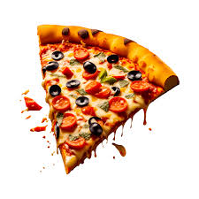

pizza

Pizza (Italian: [ˈpittsa], Neapolitan: [ˈpittsə]) is a savory dish of Italian origin consisting of a usually round, flattened base of leavened wheat-based dough topped with tomatoes, cheese, and often various other ingredients (such as anchovies, mushrooms, onions, olives, pineapple, meat, etc.), which is then baked at a high temperature, traditionally in a wood-fired oven.[1] A small pizza is sometimes called a pizzetta. A person who makes pizza is known as a pizzaiolo.
pastry
.jpeg) Pastry refers to a variety of doughs, as well as the sweet and savoury baked goods made from them. These goods are often called pastries as a synecdoche, and the dough may be accordingly called pastry dough for clarity. Sweetened pastries are often described as bakers' confectionery
Pastry refers to a variety of doughs, as well as the sweet and savoury baked goods made from them. These goods are often called pastries as a synecdoche, and the dough may be accordingly called pastry dough for clarity. Sweetened pastries are often described as bakers' confectionery